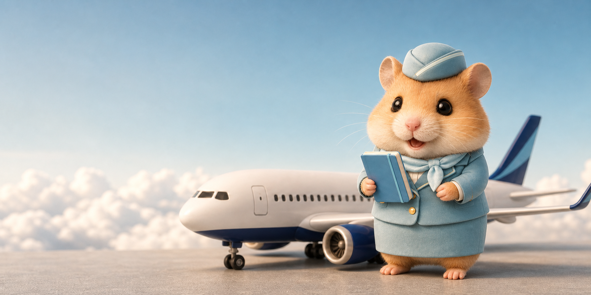
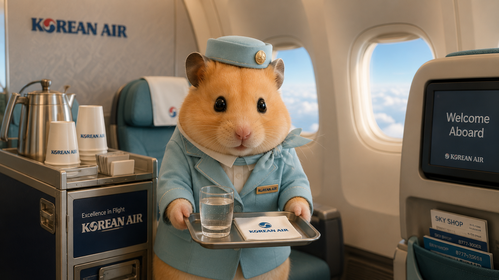

KOREAN AIR Career Brief
SAFETY · SERVICE · CAREER
날짜 선택
KOREAN AIR · CABIN CREW INTELLIGENCE
대한항공 데일리 브리프
안전·서비스·통합 이슈를 객실승무원 지원자의 언어로 연결합니다.
불러오는 중
7일·30일 누적 인사이트 포함
HAMZZI'S CABIN NOTE
오늘의 뉴스를 면접의 언어로
←
→

Ready for Flight
오늘의 회사와 운항 이슈를 먼저 살펴봐요.

Welcome Aboard
안전과 서비스 현장을 떠올리며 기사를 읽어봐요.
이 보고서에서 보기
리포트를 불러오고 있습니다.